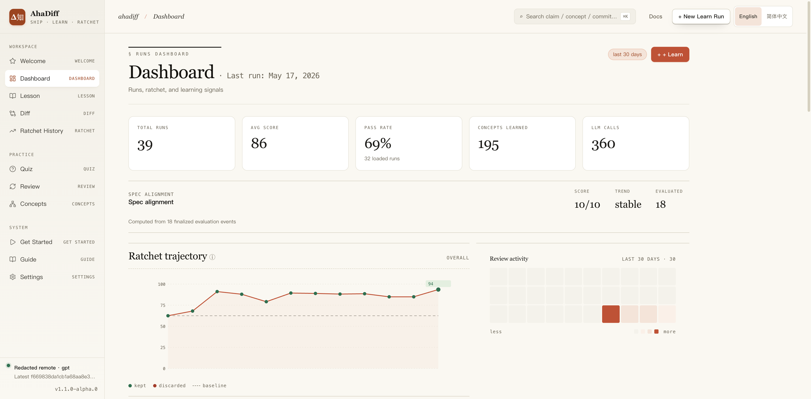
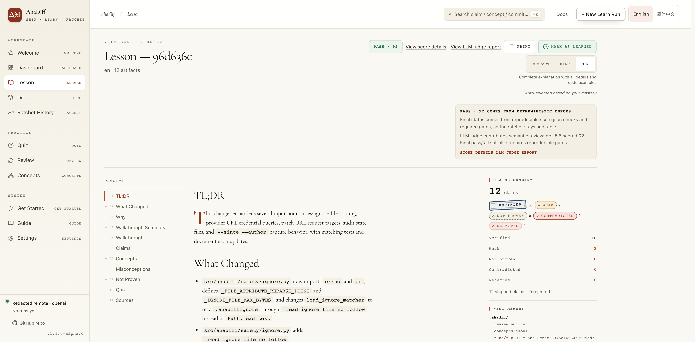
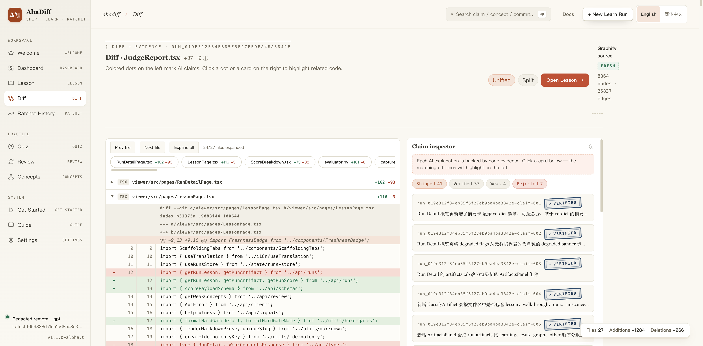
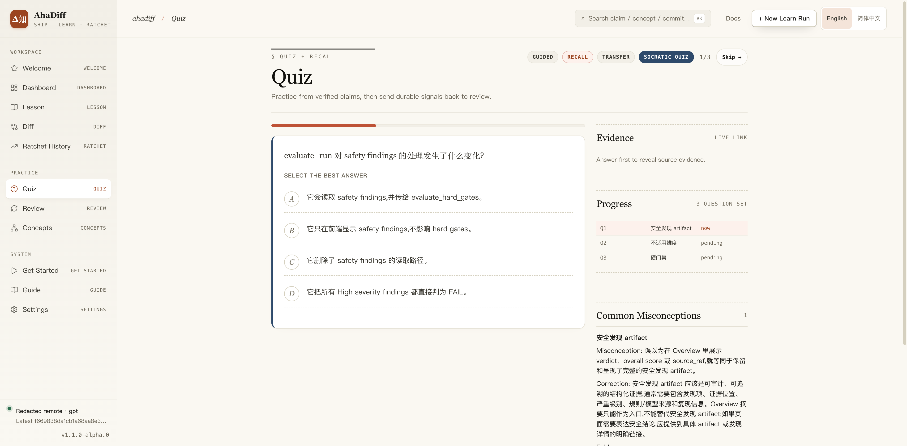
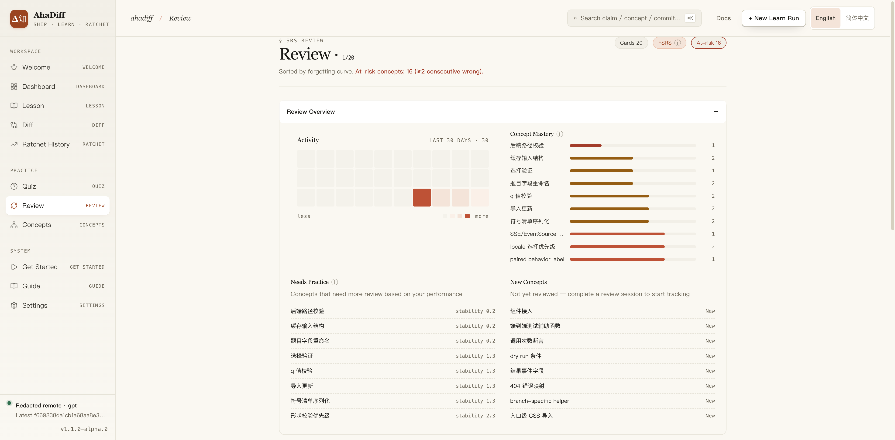
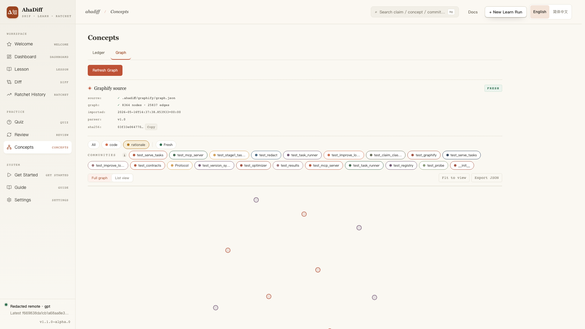
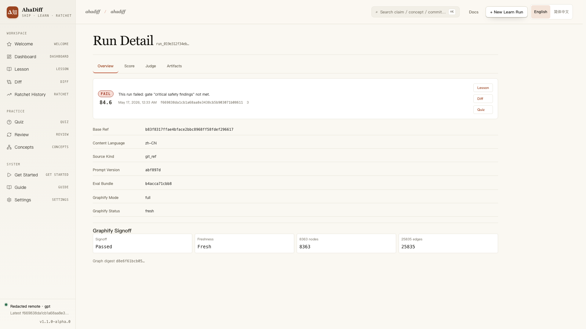
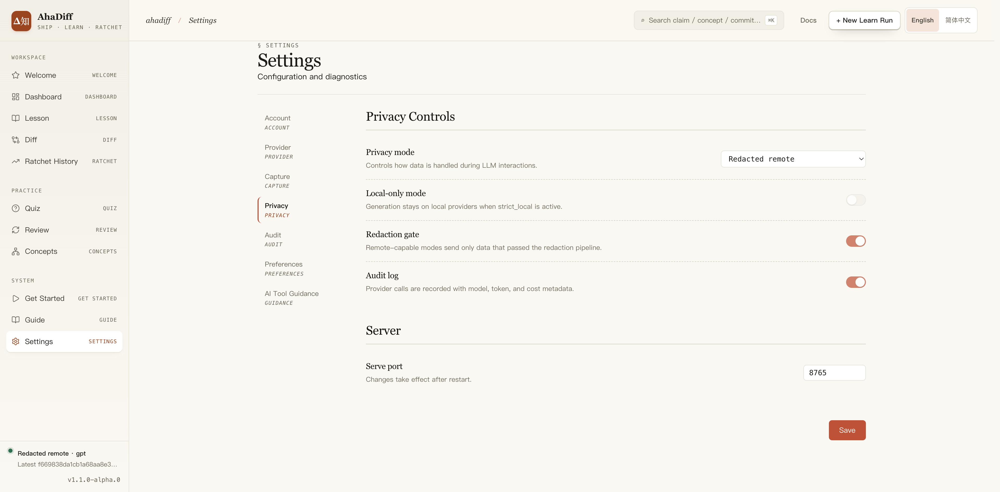

读懂这次改动。
Git 改动 · 两份文件 · 粘贴改动
自己的修复、同事的修改、AI 生成的变化，都可以拿来学。提供修改前后的内容，先预览 diff，再读有证据可查的课程、做测验和复习。两份文件或粘贴 patch，无需创建 Git 仓库。
v1.3.8 · 当前源码入口更新，尚未发布
把解释和修改前后的内容放在一起看。AhaDiff
欢迎、快速上手和使用指南都有这三个入口。安装 AI 工具指引是可选项。
已有 Git 仓库时，选择工作区修改或提交范围。可以学习自己的 bug 修复、同事的 commit 或 AI 编辑。
分别点选或拖放修改前、修改后的文件。代码练习、SQL、配置、Markdown 和 Notebook 两版本都能从这里开始。
粘贴从 review 或其他工具复制的统一 diff。先看安全处理后的变化预览，再决定是否生成课程。
不同来源接入同一条学习流程，结论保留证据状态。
选择 Git 改动、两份文件或粘贴改动。文件和 patch 的预览在本机完成，不调用 LLM；修改来源后需重新预览。
→解释链接到来源行，并区分已验证、证据较弱和未证明等状态。只有文本差异时，不冒充执行行为证明。
→用已配置的 provider 生成课程、测验和复习卡。课程有 Full / Hint / Compact 三种提示程度。
→记录确定性评分与硬门禁，比较课程质量。可选 LLM judge 提供建议，不覆盖最终判定。
读解释、查证据、独立作答，再按计划复习。
每句解释都链接到 file:line 代码证据。5 种 claim 状态 (verified / weak / not_proven / contradicted / rejected) 确保可信。
采用 Anki 同源的 FSRS-6 算法，根据你的答题表现自动调整复习间隔。
Full → Hint → Compact 三阶段学习撤架。由 FSRS 记忆稳定度自动驱动，越熟悉提示越少。
accuracy / evidence / diff_coverage / learnability / quiz_transfer / spec_alignment / conciseness / safety_privacy = 100 分。
improve-run 可在已有运行上重新生成课程，仅在确定性评分提高时保留新结果；原运行保留。
strict_local / redacted_remote / explicit_remote 三档隐私。远端请求前会执行隐私与脱敏门禁。
OpenAI / Anthropic / Gemini / Azure / DeepSeek / Ollama 等 9 种 API 格式。BYOK，自动探测上下文长度；DeepSeek 走 JSON object 兼容模式，全局 provider 可直接选择并保存。
设置与指南共用 16 个当前工具目标的目录。无需安装集成也能使用文件、patch 和普通 Git 学习。
把学习记录导出、复习，或接进你的 agent 与 CI。
WebUI 一键导出 Anki .apkg；CLI 用 export-results 写 results.tsv，export preview 生成本地静态预览包。
需要自动化时，再配置 Claude、Codex、Cursor、GitHub Actions 或 Git hooks 等项目级指引。
从 diff 捕获到 UI 渲染，每一层各司其职。
从 learn 到复习，一个真实 run 的完整演示（带字幕）。
视频展示较早界面，当前源码的三个学习来源请按下方步骤操作。安装已发布版本推荐使用 pipx 或 uv tool。
先配置 provider，再对比工作目录内的两份文件。Git 用户也可使用 --last 或提交范围。
示例输出，不是验证结果。分数、题数和证据状态取决于输入与配置。
以下为已有界面示例；当前源码新增的三个学习入口见上方说明。








选择来源后，共用同一套课程、测验、复习和质量历史。
| 你要学什么 | 怎么输入 | 证据边界 |
|---|---|---|
| 自己的修复、同事或 AI 的提交 | Git 改动：工作区或提交范围 | 回查变化行；有可用代码上下文时补充符号证据。 |
| 代码练习、SQL、配置、Markdown | 两份文件：修改前与修改后 | 比较文本来源，证据不足的结论会标明状态。 |
| Notebook 两个版本 | 选择两份 .ipynb 文件 | 按单元格比较来源，不执行 Notebook。 |
| 复制来的 review patch | 粘贴改动：统一 diff 文本 | 只有 diff hunk 支持时使用较弱证据，不冒充仓库符号证明。 |
| 只有当前文件，或一份 PDF / 网页 | 目前需要提供前后版本 | 独立资料学习与持久快照尚未实现。 |
课程分数衡量生成材料的质量，不代表程序已测试通过，也不证明你已掌握。目录对比和 Git hooks 仅限 macOS/Linux；文件与 patch 入口面向三端。
从捕获到复习，常用命令一览。
ahadiff init | 在仓库里初始化 .ahadiff/ 状态目录 |
ahadiff provider test | 注册并探测一个 LLM 供应商 |
ahadiff learn <range> | 把一段 diff 变成带证据的课程 |
ahadiff quiz <run_id> | 对刚学的 run 做主动回忆测验 |
ahadiff review | 按 FSRS 复习到期卡片 |
ahadiff verify <run_id> | 重新校验 claims 与评分 |
ahadiff improve --rounds N | 在 git worktree 里迭代优化生成 prompt（仅源码 checkout） |
ahadiff improve-run <run_id> | 重新生成课程，仅当确定性评分更高时保留；任何安装方式可用（含 pip） |
ahadiff serve | 在仓库或普通目录打开本地 WebUI |
ahadiff export preview | 生成本地静态预览包 |
ahadiff watch | 工作区变更自动 learn |
ahadiff install hooks --auto-learn | 每次 commit 后后台自动 learn |
ahadiff mcp-server | 面向 AI 工具的只读 MCP server（7 个工具） |
完整 CLI 命令、输入限制和跨平台说明见中英文使用指南；历史验证记录与本次尚未发布的源码更新分开记录。
几步之内，从安装到第一节课。
用 pipx 或 uv tool 安装已发布版本。在准备保存学习记录的文件夹运行 ahadiff serve，再到设置添加一个本地或远端 provider。普通目录也可以，Agent 集成是可选项。
在欢迎、快速上手或使用指南中选择来源。两份文件可点选或拖放，每份 UTF-8 文本最多 256 KiB；粘贴 diff 最多 64 KiB。预览不调用 LLM，开始学习时使用你的 provider 和隐私设置。
欢迎 → 两份文件 → 放入修改前后文件 → 预览变化 → 开始学习
完成后读课程、点击证据回到差异，再独立作答。到期复习会带回旧卡片；小练习可勾选“变化较小时仍生成课程”。
课程 → 差异 → 测验 → 复习
ahadiff serve，配置 provider，再选来源即可。CLI 的 init、doctor 仍要求 Git 仓库；无需为文件学习专门建仓库。